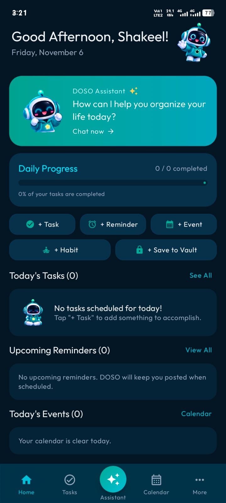
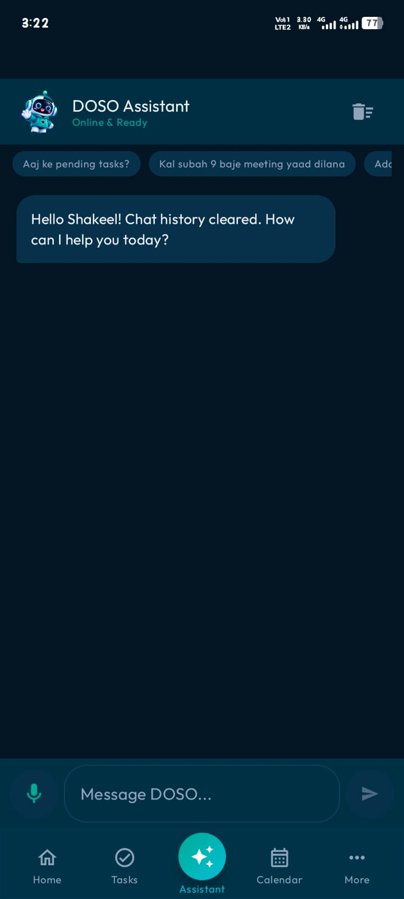

✓
STAY ON TRACKTasks that feel manageable.
Keep your to-dos organised and focus on what needs your attention today.
✓Plan the dayDone
Make some time for yourselfToday
Follow up on a callLater
Life moves fast. MY DOSO brings your tasks, reminders, events and everyday plans together — with a friendly AI companion by your side.
From quick notes to plans you don't want to forget, MY DOSO helps bring the moving pieces of your day together.
Keep your to-dos organised and focus on what needs your attention today.
Chat with DOSO in English or Roman Urdu to organise thoughts and everyday plans.
Keep important dates and upcoming plans close, so the things that matter don't slip away.
Create habits and routines that fit your life. Progress is made one little win at a time.
Real screens from the MY DOSO Android app — a glimpse of what's taking shape.

Home dashboard

AI Assistant
More app previews will be added as the experience develops.
DOSO is designed to be a friendly, thoughtful companion — ready to help you organise a busy day, remember something important or simply work through what's on your mind.
MY DOSO's journey will keep growing with useful ideas shaped around real needs.
A handy place for useful links, copied text and snippets you want to keep.
ON THE ROADMAPGentle break nudges to help bring a little balance to screen time.
ON THE ROADMAPBuild small routines and recognise the progress you make along the way.
GROWING WITH DOSOMY DOSO is being built with a local-first approach for everyday personal information. Core organising features are designed to work on your device. AI conversations require an internet connection and relevant content is sent to Google's Gemini service to generate responses. The app is not designed around a required account or cloud sync.
Read the privacy overview →MY DOSO v1.0.0 is now available for Android. Your everyday personal companion is ready to get started.